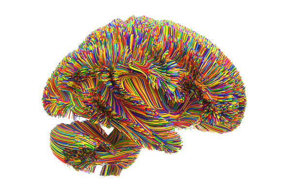

<section class="transform_section">
    <div class="transform_div container">
        <div>
            <h1 class="main_title">Enabling transformation</h1>
            <p class="transform_text">Your edX learning experience is grounded in cutting edge cognitive science. With more than two dozen distinct learning features to help you achieve your goals, our approach follows three key principles:</p>

            <h1 class="heading">Experience</h1>
            <p class="transform_text">Learn new knowledge and skills in a variety of ways, from engaging video lectures and dynamic graphics to data visualizations and interactive elements.</p>

            <h1 class="heading">Practice</h1>
            <p class="transform_text">Demonstrating your knowledge is a critical part of learning. edX courses and programs provide a space to practice with quizzes, open response assessments, virtual environments, and more.</p>
            
            <h1 class="heading">Apply</h1>
            <p class="transform_text">Learning on edX transforms how you think and what you can do, and translates directly into the real world—immediately apply your new capabilities in the context of your job.</p>
        </div>
        <div class="img_div my-auto">
            
        </div>
    </div>
</section>